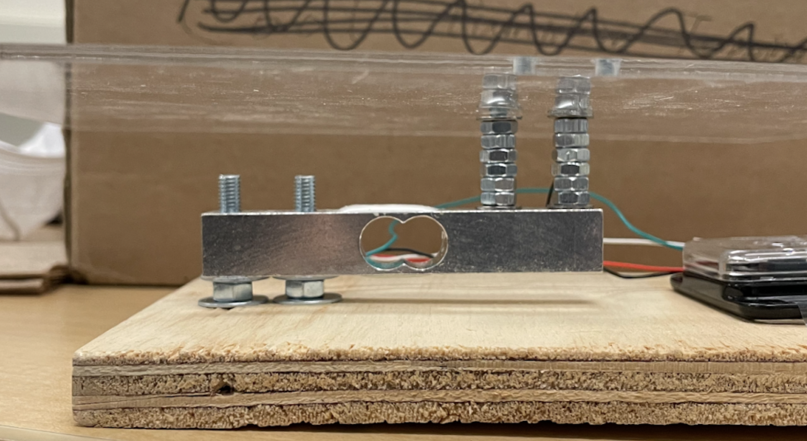
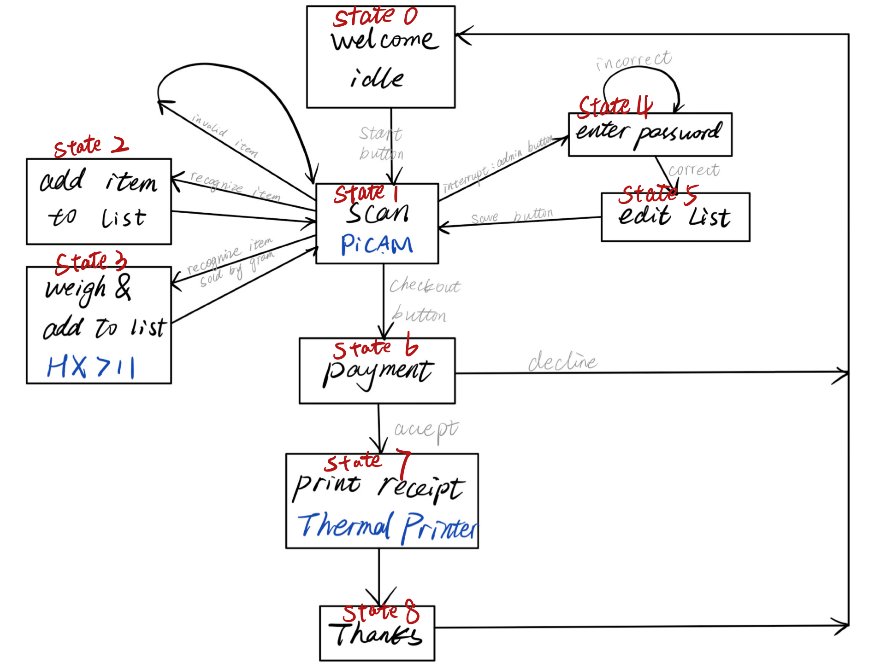

Self Checkout Machine
ECE 5725 21Fall Final Project
Hongxi Jin (hj439), Yuanli Lu
(yl929)
Demonstration Video
Introduction
Ever had a sudden craving for that Sour cream and onion chip? But you didn’t wash your hair or didn’t have makeup on so you don’t want to interact with anyone. Well, for a fast and interaction-less shopping experience, you can use our self-checkout machine. Pull up your hoodie, wear a mask, nobody would ever know you were here. This project is to mimic one of the self-checkout machines such as in Target or Walmart, it can read barcodes with a Pi Camera, weigh items that are sold by the grams, and print receipts for your reference. It also had an admin mode to delete items that you accidentally scanned twice.
Project Objective:
- Build a self checkout system with admin mode.
- Real-time barcodes detection using Pi camera.
- Weigh items using weight sensor.
Design & Testing
System Overview
Fig.1 System Showcase

Fig.2 System Connection Diagram
There are four components in the system. Raspberry Pi, PiTFT Screen, Thermal Printer, Digital Load Cell Weight Sensor, HX711 Weight Sensor ADC Module, Raspberry Pi Camera.
-
Raspberry Pi 4:
From Fig.2, you can see everything is connected to the Raspberry Pi 4, which serves as the system controller, is powered by a USB-C 110V power adapter. -
PiTFT Screen:
PiTFT serves as the User Interface. The user uses the touch screen to navigate through the checkout process. It is connected to the raspberry pi with a 40 pin break-out cable. And it controls can be found in Lab 1’s handout manual [1]. -
Thermal Printer:
Thermal Printer is used for printing receipts. It is connected to the Raspberry Pi 4 through a USB-A cable. And needs a 6V - 9V DC power supply. Digital Load Cell Weight Sensor and HX711 ADC Module: The digital scale is connected to the HX711 ADC module. The HX711 module serves both as an ADC as well as an amplifier. And it is connected to the Raspberry Pi 4 through a customized serial interface. -
Raspberry Pi Camera:
The Pi Camera serves as the bar code reader. It is connected to the Raspberry Pi 4 through a 22-pin camera connector.
System Modules and Documentation
Raspberry Pi 4
The Pi 4 documentation can also be found in Lab1’s handout manual [1], how to set up and configure the environment.
PiTFT Screen
The PiTFT Screen configuration can also be found in Lab1’s handout manual [1]. And to use the PiTFT solely, we needed to add command line calls in the python script. As below:
os.putenv('SDL_VIDEODRIVER', 'fbcon') # Display on piTFT
os.putenv('SDL_FBDEV', '/dev/fb0')
os.putenv('SDL_MOUSEDRV', 'TSLIB') # Track mouse clicks on piTFT
os.putenv('SDL_MOUSEDEV', '/dev/input/touchscreen')
pygame.mouse.set_visible(False)
Thermal Printer
Thermal Printer is controled through serial port communication. It will be names as “lp0” under /dev/usb/, we first need give read and write access to /dev/usb/lp0 to all users. And we can write to the USB serial through sudo echo “SampleText" > /dev/usb/lp0. This method is found on a website [2]. Python code example below:
os.system("sudo chmod 666 /dev/usb/lp0")
line = 'sudo echo \"{:^30}\\\\n\" > /dev/usb/lp0'.format('Sample Text')
Digital Load Cell Weight Sensor and HX711 ADC Module
Fig.3 HX711 Connection Diagram[3]

Fig.4 Weight Sensor Installation Showcase
How the sensor works is that it senses the stretch in the metal bar shown in Fig.4. The white glue thingy is the sensor that reads the stretch and translates it into analog signals. The metal bar serves as leverage, and it is screwed down as in Fig.3. The four screws have different dimensions. Two on the left use metric M4 size screws, and the right two use metric M5 size screws. We found a GitHub repository to configure the sensor and read in the data from HX711 module [4]. Sample code below:
hx = HX711(DT_GPIO, SCK_GPIO)
hx.set_reading_format("MSB", "MSB")
hx.set_reference_unit(referenceUnit)
hx.reset()
hx.tare()
val = hx.get_weight(5)
Line 1 is to initialize HX711 object, with the DT GPIO pin and SCK GPIO pin that you have connected to your Pi.
Line 2 The first parameter is the order in which the bytes are used to build the "long" value. The second parameter is the order of the bits inside each byte. There seems to be a bug in python that causes this setting to generate random outputs. I found that using ‘MSB’ ‘MSB’ to give out a good reading.
Line 3 is to set a reference unit in grams so it can zero itself, here from Fig.4, we measured the weight of screws, nuts and the acrylic as the refference weight, so every time the system initialize, it has a weight to refference to.
Line 6 is the function to read the weight in grams. The parameter is the times you want it to read and get the average reading.
Raspberry Pi Camera
Then we installed the PiCamera and OpenCV package. One thing that’s worth mentioning is how we configured openCV to operate on the PiTFT. At first, we referred to the online tutorials about installing cv2 in RPi, but they did not work. Then we discussed with classmates and professor, and finally made all packages installed in RPi. One important reminder is that always use “sudo” to install all packages, otherwise, the packages could not run in PiTFT. detailed instructions below:
sudo pip3 install opencv-contrib-python==4.5.3.56 -i https://www.piwheels.org/simple
sudo apt-get update
sudo apt-get install libhdf5-dev -t buster
sudo apt-get install libatlas-base-dev -t buster
sudo apt-get install libjasper-dev -t buster
sudo apt-get install libqt4-test -t buster
sudo apt-get install libqtgui4 -t buster
sudo apt-get update
sudo pip3 install numpy==1.20.3 -i https://www.piwheels.org/simple
The actual version for OpenCV and NumPy may vary as it will certainly be upgraded in the future. Please refer to the website https://www.piwheels.org/simple/opencv-contrib-python/ [5] and https://www.piwheels.org/simple/numpy/ [5] For prebuilt wheels that match your python version. Credit to our classmate Chenxi Qian (cq53@cornell.edu) for giving us this method to configure OpenCV.
Software Design
Then comes to the software design part. Our main purpose is to realize the basic function of checkout, including recognizing the barcode, searching for the price of the certain item in the database, weighing the item, making a payment and printing the receipt. In addition, it is necessary to allow the customers to edit their shopping list, since they may scan one item twice by mistake. However, the customers should not have full permission to edit the shopping list. Thus we consider adding an administration mode to our system, only the administrators who enter the right password can get into the admin mode and edit the items (for example delete items). The overall process is a bit complex, so we consider using the finite state machine (FSM) to describe the whole software design.
Fig.5 System FSM
As is shown in Figure 5, we defined 9 states and conditions. Details are as follows. The system starts with state 0 (welcome page), in state 0, some parameters like shopping list and total price are initialized. When the “start” button is pressed, it would turn into state 1 (scan mode). In scan mode, the camera is enabled and the video stream works to receive the barcodes continuously. As soon as a barcode is recognized in one video frame, the system would search it from the database. This step has three results: item recognized as an invalid item; item sold by the unit; item sold by the gram. If one item is recognized as an invalid item, the system would give the user a hint to scan the item again. Then after 2 seconds, the system would return back to state 1. If one item is sold by unit, the system would jump to state 2 and the item would be added to the shopping list, the total price is changed accordingly. If one item is sold by the gram, we come to state 3 with the enable of weight sensor. To get rid of the hand interference factor, we set up a threshold of 5 grams and a timer for 2 seconds. Once the detected weight is higher than 5 grams, the system would wait for 2 seconds and then record the average weight of 30 times. This step ensures the accuracy of weighing. The last step in this state is to update the shopping list and total price.
It is worth noting that the admin mode should be accessible in the whole checkout process. So we use the physical button interrupt to enter admin mode (state 4 and state 5). Administrators can login to the admin mode in whatever state (using the right password), rolling down the shopping list and deleting the item that the customer does not need.
After finishing the scan process, the customer just presses the “check out” button to jump to the state 6 (payment mode). There are two choices: decline the payment and return back to the welcome page; make a payment and get to the state 7 (print receipt). In state 7, the thermal printer is enabled and receives the shopping list and total price data. Finally the receipt is printed through thermal printer and a pleasant shopping trip comes to an end.
Database
To save items and the corresponding prices, we import sqlite3 in python.
#Install sqlite3
sudo apt-get install sqlite3
sudo apt-get install sqlite3 -t buster
#Create a new database
sqlite3 itemLibrary.db
#Create a table
CREATE TABLE products(barcode text, name text, price integer, weigh integer);
#Insert data into a table (Python)
conn = sqlite3.connect('itemsDB/itemLibrary.db')
c = conn.cursor()
c.execute("INSERT INTO products(barcode, name, price, weigh) VALUES(?, ?, ?, ?)", ("123456", "apple", 5.12, 1))
#Select item from the table
row = c.execute('SELECT * FROM products WHERE barcode = :bc', {'bc':barcode}).fetchall()
Barcode Recognition
To realize the real time barcode recognition, we have to install the VideoStream and pyzbar (based on cv2) packages[6]. Details are as follows.
#Install pyzbar package
pip3 install pyzbar
#Install video stream package
pip3 install imutils
Results & Conclusion
From the demo video, you can see that we have achieved everything in the FSM and every module worked as expected. Though for the thermal printer, we tried to import a package so it can print pictures and QR codes, we couldn’t figure out how it worked and it wasn’t communicating to our printer. This would be put in the part of the future work.
Future Work
- Instead of just reading bar codes from items and matching them with items in our database, we can also add a function in admin mode to scan items, not in the database and add them into the database.
- For the weight sensor installation, we should use screw spacers instead of nuts. Nuts would get tighter and hold in place with each other while screwing, and hard for us to get a good space between the acrylic sheet and the weight sensor.
- For the thermal printer, instead of writing through serial, we could implement a better package so it can print out pictures and QR codes.
- Make a better-looking container.
- Add a power adapter for the thermal printer so it can plug into the socket on the wall.
Work Distribution
Yuanli Lu
yl929@cornell.edu
Hardware installation, Wrote functions for handoff between hardware and software. UI Implementation.
Hongxi Jin
hj439@cornell.edu
SFM Realization, Software design and implementation.
Parts List
- Raspberry Pi $35.00
- Raspberry Pi Camera $9.99
- Thermal Printer $39.95
- Screws $8.00
- Weight sensor HX711 $9.99
Total: $102.93
References
[1]Lab1 handout manual[2] Thermal Printer
[3] HX711 - Amazon
[4] HX711 Library
[5] Piwheels
[6] Pyzbar
[7] PiCamera